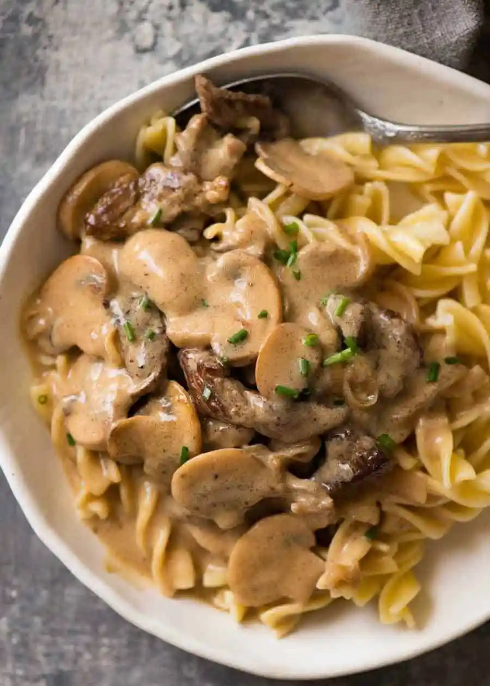

Stroganoff

What's it
Golden seared juicy beef strips smothered in an incredible sour cream mushroom gravy,
Ingredients
- 1 1/2 pounds beef sirloin steak, 1/2 inch thick
- 8 ounces fresh mushrooms, sliced (2 1/2 cups)
- 2 medium onions, thinly sliced
- 1 garlic clove, finely chopped
- 1/4 cup butter
- 1 1/2 cups Progresso™ beef flavored broth (from 32-ounce carton)
- 1/2 teaspoon salt
- 1 teaspoon Worcestershire sauce
- 1/4 cup Gold Medal™ all-purpose flour
- 1 1/2 cups sour cream
- 3 cups hot cooked egg noodles
Steps
- Cut beef across grain into about 1 1/2x1/2-inch strips.
- Cook mushrooms, onions and garlic in butter in 10-inch skillet over medium heat, stirring occasionally,
until onions are tender; remove from skillet.
- Cook beef in same skillet until brown. Stir in 1 cup of the broth, the salt and Worcestershire sauce. Heat
to boiling; reduce heat. Cover and simmer 15 minutes.
- Stir remaining 1/2 cup broth into flour; stir into beef mixture. Add onion mixture; heat to boiling,
stirring constantly. Boil and stir 1 minute. Stir in sour cream; heat until hot (do not boil). Serve over
noodles.